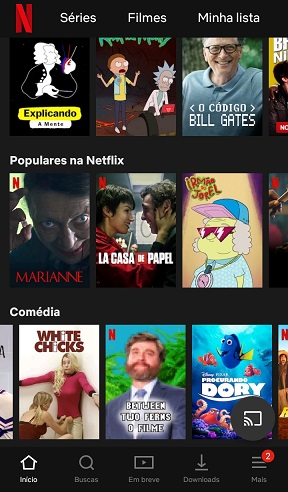
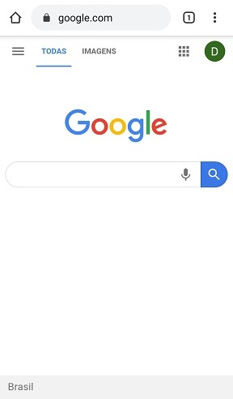

Week 2 - Design Principles
Hick's Law
Example from Netflix
The Hick's Law relates the time needed by a person to choose an option based in the amount of possibilities given. When the choices increase, the time taken to decide increases logarithmically.
Chosing a video (movie, series episode, cartoon) in a streaming platform like Netflix can take a lot of time when the user doesn't know before hand what he wants to watch. The catalog gives you thousands of possible choices to choose. Even excluding the type of videos you don't like, it is common wasting a lot of time looking for something interesting to watch.
Visual Hierarchy
Example from Google
Visual hierarchy is the technique used by designers to influence users to focus on the most important information. Some of the characteristics implemented to call attention can be large pictures, bright colors, contrast, whitespace, and others.
Google website is a very good example of an attempt to call attention to the most important information. It has a lot of white space, low information, an a big image of its logo in the center of the page. It has only one field to type something. The user knows what are the tools to use in the site.
Rule of Thirds
Example from Scenes.com.br
The Rule of Thirds explains that you can give more energy to your images (pictures, photos) dividing it in 9 equal parts. These 9 parts will create 3 collumns and 3 rows, separated by 2 horizontal lines and 2 vertical lines. When you position the objects in these lines, or close to them, you give more focus to your images and its details.
The website Scenes.com.br, created by photographers show some pictures of various situations. In these pictures you can see imaginary lines dividing each scene in 9 parts.